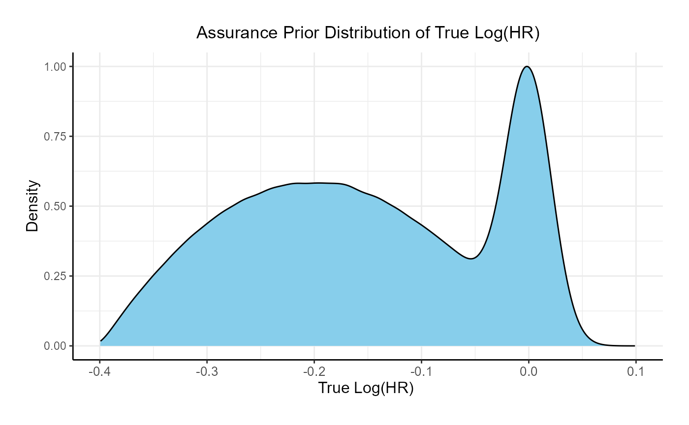

Bayesian Assurance, Time-to-Event Outcome
J. Kyle Wathen and Laurent Spiess
October 14, 2025
BayesianAssuranceTimeToEvent.RmdThe following scripts are related to the Integration Point: Analysis and the Integration Point: Response. Click on the links for more information about these integration points.
Introduction
The intent of the following examples is to demonstrate the computation of Bayesian assurance, or probability of success, through the integration of R with Cytel products. The examples feature a two-arm trial with time-to-event outcomes, using a bi-modal distribution prior to compute assurance.
The scenarios covered are as follows:
- Fixed sample design using a bi-modal distribution and Cox proportional hazards model to compute Bayesian assurance.
Once CyneRgy is installed, you can load this example in RStudio with the following commands:
CyneRgy::RunExample( "BayesianAssuranceTimeToEvent" )Running the command above will load the RStudio project in RStudio.
In the R directory of this example you will find the R files used in the examples:
- SimulatePatientSurvivalAssurance.R - Functions to simulate patient outcomes under a time-to-event distribution informed by a bi-modal prior.
- AnalyzeSurvivalDataUsingCoxPH.R - Implements Bayesian analysis of simulated outcomes using Cox proportional hazards model.
Example 1 - Fixed Sample Design
This example considers a two-arm fixed sample design with a time-to-event endpoint, with 300 patients per arm. It demonstrates how to customize the the Response (Patient Simulation) element of East Horizon’s simulation to simulate the true hazard ratio from the prior and then simulate the patient data using the sampled hazard ratio, and the Analysis element of East Horizon’s simulation to perform the analysis using a Cox model.
The figure below illustrates where this example fits within the R integration points of Cytel products, accompanied by flowcharts outlining the general steps performed by the R code.

Response (Patient Simulation) Integration Point
This endpoint is related to this R file: SimulatePatientSurvivalAssurance.R
This function simulates patient-level outcomes within a Bayesian assurance framework. Information generated from this simulation will be used later for the Analysis Integration Point. In this example, a bi-modal prior on the is used. The components of the prior are:
- 25% weight on .
- 75% weight on , rescaled between -0.4 and 0.

Refer to the table below for the definitions and values of the user-defined parameters used in this example.
| User parameter | Definition | Value |
|---|---|---|
| dWeight1 | Probability of using the normal prior for log(HR). | 0.25 |
| dPriorMean | Mean of the normal prior for log(HR). | 0 |
| dPriorSD | Standard deviation of the normal prior for log(HR). | 0.02 |
| dAlpha | Alpha parameter of the Beta prior for log(HR). | 2 |
| dBeta | Beta parameter of the Beta prior for log(HR). | 2 |
| dUpper | Upper bound for scaling the Beta prior. | 0 |
| dLower | Lower bound for scaling the Beta prior. | -0.4 |
| dMeanTTEControl | Mean time-to-event for the control group. | 12 |
Analysis Integration Point
This endpoint is related to this R file: AnalyzeSurvivalDataUsingCoxPH.R
A single analysis is conducted once 50% of patients have experienced the event of interest. Using the function in the file, the analysis employs a Cox proportional hazards model, with a hazard ratio (HR) less than 1 indicating a benefit in favor of the experimental arm. It uses information from the simulation that is generated by the Response element of East Horizon’s simulation, explained above. A Go decision is made if the resulting p-value is less than or equal to 0.025. Refer to the table below for the definitions of the user-defined parameters used in this example.
| User parameter | Definition |
|---|---|
| bReturnLogTrueHazard | If True, the function returns the natural logarithm of
the true hazard ratio instead of its raw value. |
| bReturnNAForNoGoTrials | If True and the trial does not meet the Go decision
criterion, the function returns NA for the hazard
ratio. |